I’ve been collaborating on a mini research study in collaboration with Matt Wallaert (@mattwallaert) to better understand why White Men win at work.
Past research has found that White Men are more likely to take risks and at work and reap the rewards of “failing upward,” compared to Women and People of Color. But they’re not more talented — they’re just more confident. What responsibility do organizations and leaders have to make everyone feel safe to take risks and feel that it’s OK to fail sometimes?
We asked 500 participants from Pollfish to respond to two 7-point scales. One scale measured Psychological Safety At Work (PS) and the other measured Occupational Self-Efficacy (OSE). Participants also responded to a demographic questionnaire. We were interested in understanding how these two factors, PS and OSE, would differ between White Men and Women/People of Color. Is there a larger gap with one of these factors vs. another? Are they related?
The code below implements the python code used to analyze this data.
Imports
import pandas as pd
import numpy as np
import seaborn as sns
import matplotlib.pyplot as plt
import scipy
import statsmodels.stats as stats
import statsmodels.api as sm
from statsmodels.graphics.gofplots import qqplot
from scipy.stats.stats import pearsonr
# Plot styling
import matplotlib.style as style
style.use('fivethirtyeight')
Data cleaning and encoding
# Read data
df = pd.read_csv('pollfish-data.csv', encoding='latin1')
# Drop columns we don't need
df = df.drop(['Time Started', 'Time Finished', 'Manufacturer', 'OS', 'Year Of Birth',
'Country', 'Provider', 'US Census Region', 'US Census Division',
'US Congressional District', 'DMA Code', 'DMA Name', 'Weight',
'For each of the following statements, please indicate how much you agree or disagree based on your experience at workplaces in general (not in any specific job).'],
axis=1)
Rename columns
Next we’ll rename the columns to be easier to work with.
Scale item columns
First we’ll rename the items belonging two psychology scales used: one measuring psychological safety at work and the other measuring general self-efficacy at work. We’ll rename the items based on the scale to which they belong, in the order listed on the source articles. The 7-item Psychological Safety scale, here denoted by the PS prefix, was developed by Edmondson (1999). [OSE scale… ]
- Edmondson, A. (1999). Psychological safety and learning behavior in work teams. Administrative science quarterly, 44(2), 350-383. https://www.jstor.org/stable/2666999
df = df.rename(columns = {
# Psychological Safety items
'If I make a mistake at work, it is held against me.': 'PS1',
'People at work are able to bring up problems and tough issues.': 'PS2',
'People at work sometimes reject others for being different.': 'PS3',
'It is safe to take a risk at work.': 'PS4',
'It is difficult to ask other people at work for help.': 'PS5',
'No one at work would deliberately act in a way that undermines my efforts.': 'PS6',
'Working with members of this team, my unique skills and talents are valued and utilized.': 'PS7',
# Occupational Self-Efficacy
'When I am confronted with a problem at work, I can usually find several solutions.': 'OSE1',
'Thanks to my resourcefulness, I know how to handle unforeseen situations at work.': 'OSE2',
'I can remain calm when facing difficulties at work because I can rely on my abilities.': 'OSE3',
'No matter what comes my way at work, Im usually able to handle it.': 'OSE4',
'If I am in trouble at work, I can usually think of something to do.': 'OSE5',
'My past experiences at work have prepared me well for my occupational future.': 'OSE6',
'I meet the goals that I set for myself at work.': 'OSE7',
'I feel prepared to meet most of the demands at work.': 'OSE8'
})
Other columns
Then we’ll rename the other columns.
df = df.rename(columns = {
'How many different companies (including the current) have you worked for in your career? If you have never had a job, simply enter 0.': 'num_companies',
'Marital Status': 'marital',
'Number of children': 'num_children',
'Education': 'education',
'Race': 'race',
'Income': 'income',
'Spoken Languages': 'languages',
'Postal Code': 'zipcode',
'ID': 'id',
'Area': 'state',
'City': 'city',
'Gender': 'gender',
'Age': 'age',
'Career': 'career'
})
Encode comparison groups
Next we’ll encode gender and race groups.
# Encode white
df['white'] = df['race'].apply(lambda x: 'white' if x == 'white' else 'non_white')
# Encode white male vs. POC/female
df['white_male'] = df[['race', 'gender']].apply(lambda x:
'white_male' if (x[0] == 'white') & (x[1] == 'male')
else 'not_white_male', axis=1)
# Encode combined gender-race
def white_male_female(x):
if (x[0] == 'white') & (x[1] == 'male'):
return 'white_male'
elif (x[0] == 'white') & (x[1] == 'female'):
return 'white_female'
elif (x[0] != 'white') & (x[1] == 'male'):
return 'poc_male'
else:
return 'poc_female'
df['white_male_female'] = df[['race', 'gender']].apply(white_male_female, axis=1)
Compute scale aggregate scores
Finally, we’ll compute aggregate scores for each scale.
# Reverse-keyed items
for item in ['PS1', 'PS3', 'PS5']:
df['reverse_' + item] = 8 - df[item]
PS = ['PS' + str(i) for i in range(1,8)]
OSE = ['OSE' + str(i) for i in range(1,9)]
PS_scoring = ['reverse_PS1', 'PS2', 'reverse_PS3', 'PS4', 'reverse_PS5', 'PS6', 'PS7']
df['PS_agg'] = df[PS_scoring].mean(axis=1)
df['OSE_agg'] = df[OSE].mean(axis=1)
Participants who worked at >0 and <10 companies
We’ll make a subset of the data, including only participants who reported working for at least 1 company, and fewer than 10 companies. This will allow us to “control for” work history.
df_ctrl = df[(df.num_companies > 0) & (df.num_companies < 10)].reset_index()
Scores overall
OSE_avg = str(round(df['OSE_agg'].median(), 2))
PS_avg = str(round(df['PS_agg'].mean(), 2))
sns.distplot(df['PS_agg'], label="Psychological Safety")
sns.distplot(df['OSE_agg'], label="Occupational Self-Efficacy")
plt.legend(loc='center', bbox_to_anchor=(0.5, -0.28) , ncol=1)
plt.xlim(1, 7)
plt.xlabel('Score')
plt.ylabel('Frequency')
plt.title("On average, people feel relatively\nsafe ("+PS_avg+") & effective (" +OSE_avg+")")
Text(0.5, 1.0, 'On average, people feel relatively\nsafe (4.32) & effective (5.5)')
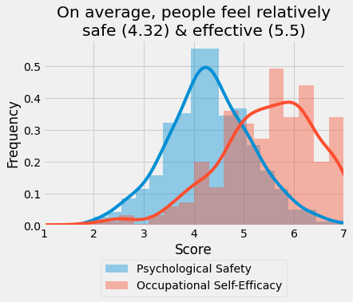
Note that we’re using mean for Ps and median for OSE. This is because, as we’ll see later, the OSE distribution is not normally distributed.
White Men vs. POC / Women
Our main question concerns the difference in scores between White Men and POC / Women. We’ll look at each scale separately, performing a test of normality before proceeding to compare the group differences.
Occupational Self-Efficacy
Normality assumption
Before we decide which test to use, we need to check the assumption of normality. The default choice of test in this case is the “t-test” which assumes that the data are normally distributed (i.e., that they have a bell-curved shape and the sample-theoretical quantiles should also be pretty well-aligned with a straight line). If we fail to meet the normality assumption, then we’ll want to use a different test.
fig, (ax1, ax2) = plt.subplots(ncols=2, figsize=(10, 5))
sns.distplot(df['OSE_agg'], ax=ax1)
qqplot(df['OSE_agg'], line='s', ax=ax2)
plt.show()
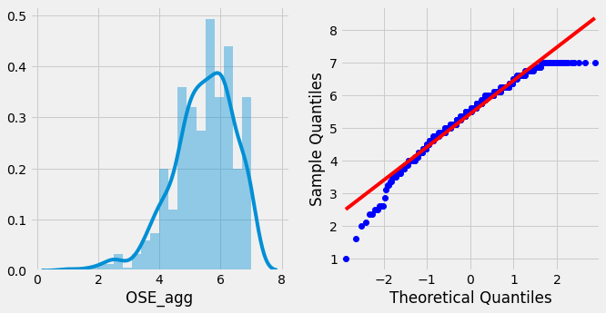
The data are not normal, so we should not use a t-test of the means.
Difference test
We’ll use a median test because we failed to meet the normality assumption, and the median test doesn’t assume a normal distribution.
# Compute averages
white_male_avg = str(round(df[df['white_male'] == 'white_male']['OSE_agg'].median(), 2))
poc_women_avg = str(round(df[df['white_male'] == 'not_white_male']['OSE_agg'].median(), 2))
# Compute stats
stat, p, med, tbl = scipy.stats.median_test(df[df['white_male'] == 'white_male']['OSE_agg'],
df[df['white_male'] == 'not_white_male']['OSE_agg'])
# Generate plots
sns.distplot(df[df['white_male'] == 'not_white_male']['OSE_agg'], label='POC / Women')
sns.distplot(df[df['white_male'] == 'white_male']['OSE_agg'], label='White Men')
# Plot settings
plt.legend(loc='upper left')
plt.xlim(1, 7)
plt.xlabel('Occupational Self-Efficacy')
plt.ylabel('Frequency')
plt.title('White Men Feel More Effective than\nPOC/Women ('\
+white_male_avg + ' vs. ' + poc_women_avg + ', p = ' + str(round(p, 2)) + ')')
Text(0.5, 1.0, 'White Men Feel More Effective than\nPOC/Women (5.75 vs. 5.5, p = 0.02)')
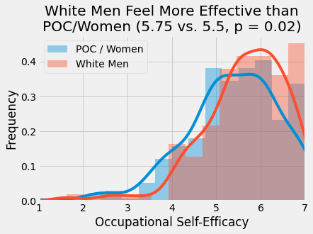
The groups were significantly different.
“Control” group check
We’ll repeat the analysis above with our group that excludes individuals who reported having worked at 0 or more than 10 companies.
# Compute averages
white_male_avg = str(round(df_ctrl[df_ctrl['white_male'] == 'white_male']['OSE_agg'].median(), 2))
poc_women_avg = str(round(df_ctrl[df_ctrl['white_male'] == 'not_white_male']['OSE_agg'].median(), 2))
# Compute stats
stat, p, med, tbl = scipy.stats.median_test(df_ctrl[df_ctrl['white_male'] == 'white_male']['OSE_agg'],
df_ctrl[df_ctrl['white_male'] == 'not_white_male']['OSE_agg'])
# Generate plots
sns.distplot(df_ctrl[df_ctrl['white_male'] == 'not_white_male']['OSE_agg'], label='POC / Women')
sns.distplot(df_ctrl[df_ctrl['white_male'] == 'white_male']['OSE_agg'], label='White Men')
# Plot settings
plt.legend(loc='upper left')
plt.xlim(1, 7)
plt.xlabel('Occupational Self-Efficacy')
plt.ylabel('Frequency')
plt.title('White Men Feel More Effective than\nPOC/Women ('\
+white_male_avg + ' vs. ' + poc_women_avg + ', p = ' + str(round(p, 2)) + ')'\
'\n(only Ps with >0 and <10 companies)')
Text(0.5, 1.0, 'White Men Feel More Effective than\nPOC/Women (5.75 vs. 5.5, p = 0.02)\n(only Ps with >0 and <10 companies)')
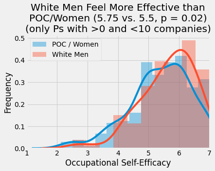
Average responses by group
tmp = df[['white_male'] + OSE]\
.groupby(['white_male'])\
.mean()\
.reset_index()
tmp_long = pd.melt(tmp, id_vars = 'white_male')
tmp_long['white_male'] = tmp_long['white_male'].replace({'white_male': 'White Men',
'not_white_male': 'POC/Women'})
sns.barplot(x = 'variable',
y = 'value',
hue = 'white_male',
data = tmp_long)
plt.legend(loc='center', bbox_to_anchor=(0.5, -0.25) , ncol=1)
plt.ylim(1, 7.25)
plt.xlabel('')
plt.ylabel('Mean Response')
plt.title('OSE Responses by Group')
Text(0.5, 1.0, 'OSE Responses by Group')
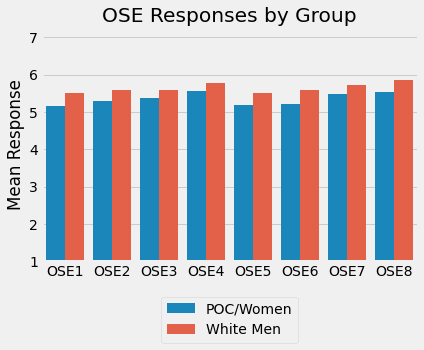
Psychological Safety
Normality assumption
fig, (ax1, ax2) = plt.subplots(ncols=2, figsize=(10, 5))
sns.distplot(df['PS_agg'], ax=ax1)
qqplot(df['PS_agg'], line='s', ax=ax2)
plt.show()
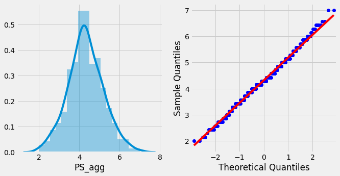
Here the normality assumption was met, so we can use means and t-tests.
Difference test
Since the normality assumption was met, we’ll use a t-test.
# Compute averages
white_male_avg = str(round(df[df['white_male'] == 'white_male']['PS_agg'].mean(), 2))
poc_women_avg = str(round(df[df['white_male'] == 'not_white_male']['PS_agg'].mean(), 2))
# Compute stats
stat, p, n = stats.weightstats.ttest_ind(df[df['white_male'] == 'white_male']['PS_agg'],
df[df['white_male'] == 'not_white_male']['PS_agg'],
alternative='larger',
usevar='unequal')
# Generate plots
sns.distplot(df[df['white_male'] == 'not_white_male']['PS_agg'], label='POC / Women')
sns.distplot(df[df['white_male'] == 'white_male']['PS_agg'], label='White Men')
# Plot settings
plt.legend()
plt.xlim(1, 7)
plt.xlabel('Psychological Safety')
plt.ylabel('Frequency')
plt.title('White Men Feel Safer than POC/Women\n('\
+ white_male_avg + ' vs. ' + poc_women_avg + ', p = ' + str(round(p, 2)) + ')')
Text(0.5, 1.0, 'White Men Feel Safer than POC/Women\n(4.43 vs. 4.27, p = 0.04)')
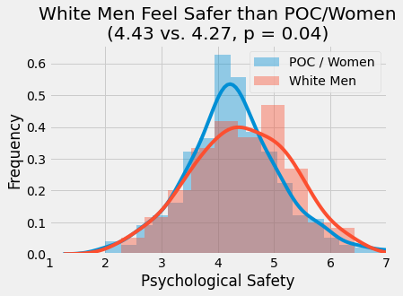
The groups were significantly different.
“Control” group check
We’ll repeat the analysis above with our group that excludes individuals who reported having worked at 0 or more than 10 companies.
# Compute averages
white_male_avg = str(round(df_ctrl[df_ctrl['white_male'] == 'white_male']['PS_agg'].mean(), 2))
poc_women_avg = str(round(df_ctrl[df_ctrl['white_male'] == 'not_white_male']['PS_agg'].mean(), 2))
# Compute stats
stat, p, n = stats.weightstats.ttest_ind(df_ctrl[df_ctrl['white_male'] == 'white_male']['PS_agg'],
df_ctrl[df_ctrl['white_male'] == 'not_white_male']['PS_agg'],
alternative='larger',
usevar='unequal')
# Generate plots
sns.distplot(df_ctrl[df_ctrl['white_male'] == 'not_white_male']['PS_agg'], label='POC / Women')
sns.distplot(df_ctrl[df_ctrl['white_male'] == 'white_male']['PS_agg'], label='White Men')
# Plot settings
plt.legend()
plt.xlim(1, 7)
plt.xlabel('Psychological Safety')
plt.ylabel('Frequency')
plt.title('White Men Feel Safer than POC/Women\n('\
+ white_male_avg + ' vs. ' + poc_women_avg + ', p = ' + str(round(p, 2)) + ')'\
'\n(only Ps with >0 and <10 companies)')
Text(0.5, 1.0, 'White Men Feel Safer than POC/Women\n(4.52 vs. 4.31, p = 0.01)\n(only Ps with >0 and <10 companies)')
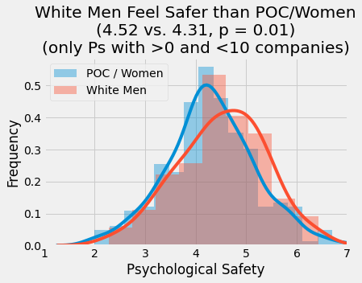
Mean responses by group
tmp = df[['white_male'] + PS]\
.groupby(['white_male'])\
.mean()\
.reset_index()
tmp_long = pd.melt(tmp, id_vars = 'white_male')
tmp_long['white_male'] = tmp_long['white_male'].replace({'white_male': 'White Men',
'not_white_male': 'POC/Women'})
sns.barplot(x = 'variable',
y = 'value',
hue = 'white_male',
data = tmp_long)
plt.legend(loc='center', bbox_to_anchor=(0.5, -0.25) , ncol=1)
plt.ylim(1, 7.25)
plt.xlabel('')
plt.ylabel('Mean Response')
plt.title('PS Responses by Group')
Text(0.5, 1.0, 'PS Responses by Group')
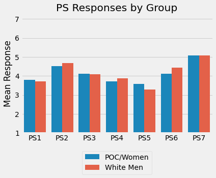
Correlation between Scale Scores
Next, we might be interested in understanding how the scales were related. Does a higher sense of Psychological Safety imply a higher sense of Occupational Self-Efficacy?
# Compute pearson correlation
r, p = pearsonr(df['PS_agg'], df['OSE_agg'])
# Plot correlation with regression line
sns.regplot(df['PS_agg'], df['OSE_agg'])
# Plot settings
plt.xlim(1, 7.5)
plt.ylim(1, 7.5)
plt.xlabel('Psychological Safety')
plt.ylabel('Occupational Self-Efficacy')
plt.title('Feeling Safe and Feeling Effective\nare Related (r = ' + str(round(r, 2)) + ', p < .05)')
Text(0.5, 1.0, 'Feeling Safe and Feeling Effective\nare Related (r = 0.38, p < .05)')
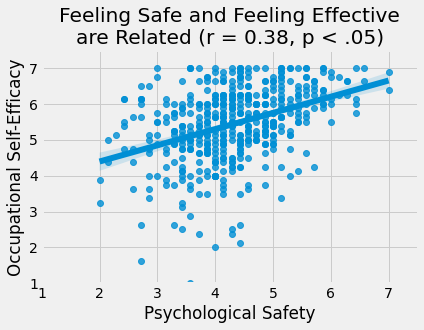
Addendum
Here we can put secondary / preliminary “due diligence” analyses.
Sample descriptives
It’s always worth taking a look at the sample composition. Who were the participants in this sample? Does it pass a “sniff test” of basic representativeness, or were members of a particular group way over-represented in the sample (as can happen with online research samples).
The sample size was N = 500. It was mostly white, English-speaking, somewhat more female, somewhat older, on the somewhat lower end of income, moderately well educated, roughly equally single and married / partnered, mostly without children, and mostly people who have worked at a handful of companies. None of the demographics suggest any major issues with representativeness, except maybe the low number of Spanish-speakers.
demographics = ['age', 'race', 'gender', 'income',
'education', 'marital', 'languages',
'num_children', 'city', 'state']
len(df)
500
df['white_male'].value_counts()
not_white_male 356
white_male 144
Name: white_male, dtype: int64
len(df[df.num_companies > 0])
459
Age
sns.countplot(y = df['age'],
order = ['18 - 24', '25 - 34', '35 - 44', '45 - 54', '> 54'])
plt.xlabel('Count')
plt.ylabel('')
plt.title('Age of Participants')
Text(0.5, 1.0, 'Age of Participants')
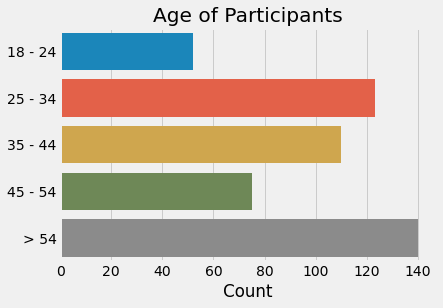
Race
labels = df['race'].value_counts().rename_axis('race').reset_index(name='counts')['race']
sns.countplot(y = df['race'], order = labels)
plt.xlabel('Count')
plt.ylabel('')
plt.title('Race of Participants')
Text(0.5, 1.0, 'Race of Participants')
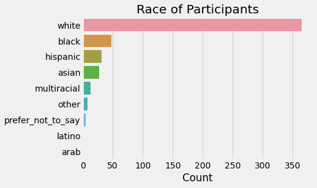
Gender
sns.countplot(y = df['gender'])
plt.xlabel('Count')
plt.ylabel('')
plt.title('Gender of Participants')
Text(0.5, 1.0, 'Gender of Participants')
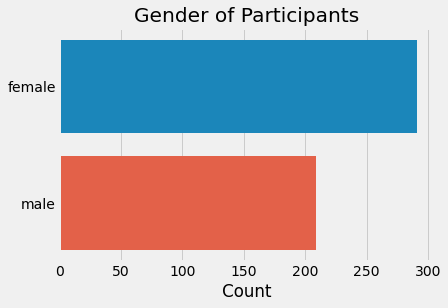
Income
sns.countplot(y = df['income'],
order = ['lower_i', 'lower_ii', 'lower_iii',
'middle_i', 'middle_ii', 'middle_iii',
'high_i', 'high_ii', 'high_iii',
'prefer_not_to_say'])
plt.xlabel('Count')
plt.ylabel('')
plt.title('Income of Participants')
Text(0.5, 1.0, 'Income of Participants')
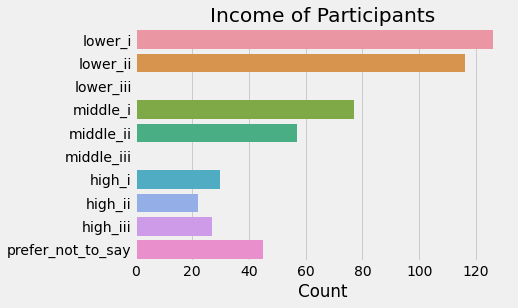
Education
sns.countplot(y = df['education'],
order = ['middle_school', 'high_school', 'vocational_technical_college',
'university', 'postgraduate'])
plt.xlabel('Count')
plt.ylabel('')
plt.title('Education of Participants')
Text(0.5, 1.0, 'Education of Participants')
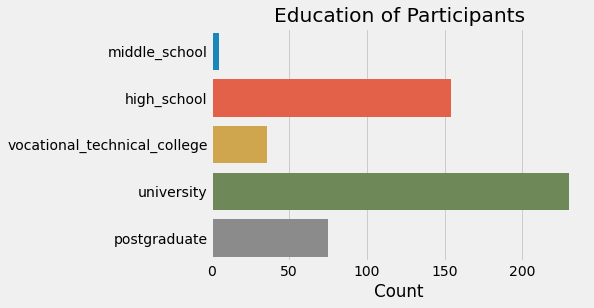
Marital status
sns.countplot(y = df['marital'])
plt.xlabel('Count')
plt.ylabel('')
plt.title('Marital Status of Participants')
Text(0.5, 1.0, 'Marital Status of Participants')
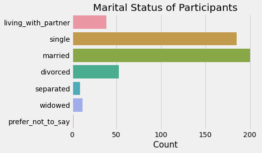
Number of Children
sns.countplot(y = df['num_children'],
order = ['zero', 'one', 'two', 'three', 'four', 'five',
'six_or_more', 'prefer_not_to_say'])
plt.xlabel('Count')
plt.ylabel('')
plt.title('Number of Children')
Text(0.5, 1.0, 'Number of Children')
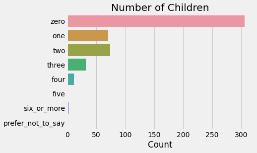
Languages Spoken
labels = df['languages'].value_counts().rename_axis('languages').reset_index(name='counts')['languages']
sns.countplot(y = df['languages'], order = labels)
plt.xlabel('Count')
plt.ylabel('')
plt.title('Languages Spoken')
Text(0.5, 1.0, 'Languages Spoken')
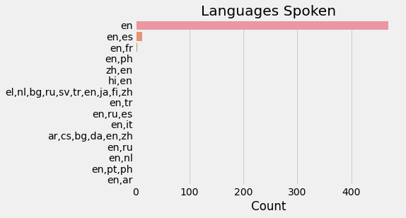
Number of Companies Worked For
df['num_companies_trunc'] = df['num_companies'].apply(lambda x: '> 10' if x >= 10 else x)
sns.countplot(y = df['num_companies_trunc'],
order = [0, 1, 2, 3, 4, 5, 6, 7, 8, 9, '>= 10'])
plt.xlabel('Count')
plt.ylabel('')
plt.title('Number of Companies Worked For')
Text(0.5, 1.0, 'Number of Companies Worked For')
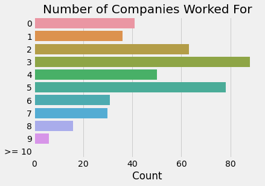
Scale Sanity Check
It’s also generally a good idea to look at how the items and the scales were correlated with one another. This can help us to diagnose problems with data quality (if everyone in the study mashed buttons at random, we would expect a very different pattern than if participants thoughtfully responded to the questions), and also ensure that we coded the responses properly (i.e., did we reverse-code the items that needed to be reverse-coded?).
We can inspect the item-scale and scale-scale correlations as a kind of sanity check on the scales. Here I’d expect to see the items for a particular scale “hang together” with the aggregate scores computed for the scale to which they belong.
def corr_matrix_plot(x):
# Generate the correlation matrix
corr = x.corr()
item_scale_corr = corr.iloc[[-1, -2], range(15)]
# Prepare the figure space
fig, (ax) = plt.subplots(1, 1, figsize=(10,2))
# Generate the heatmap
hm = sns.heatmap(item_scale_corr,
ax=ax,
cmap="coolwarm",
annot=True,
square=True,
fmt='.1f',
vmin=-1,
vmax=1,
linewidths=.05)
fig.subplots_adjust(top=.88)
fig.suptitle('Item-Scale Correlations',
fontweight='bold',
x=0.4)
for tick in ax.get_xticklabels():
tick.set_rotation(45)
return fig
print(corr_matrix_plot(df.loc[:, PS + OSE + ['OSE_agg', 'PS_agg']]))
Figure(720x144)
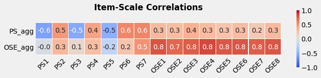
Note that three of the PS items are negatively correlated with PS_agg (PS1, PS2, PS3). This is what we would expect. These items are negatively-keyed, and didn’t change the original item values. We created new variables to store the reverse-coded values (reverse_PS1, reverse_PS2, reverse_PS3) prior to computing PS_agg.
Scale Scores by Gender-Race Combinations
Finally, although we grouped “POC” and “Women” into a single group, it might be worth breaking these groups down further and seeing if, for example, white women were any different than women of color.
With OSE, there seems to be a slight advantage to being male and a slightly greater disadvantage to being POC and female over just being female, though it’s pretty noisy when the distributions are broken down to this degree.
sns.distplot(df[df['white_male_female'] == 'white_female']['PS_agg'], label='White Women')
sns.distplot(df[df['white_male_female'] == 'white_male']['PS_agg'], label='White Men')
sns.distplot(df[df['white_male_female'] == 'poc_female']['PS_agg'], label='POC Women')
sns.distplot(df[df['white_male_female'] == 'poc_male']['PS_agg'], label='POC Men')
# Plot settings
plt.legend()
plt.xlabel('Psychological Safety')
plt.ylabel('Frequency')
plt.title('PS Scores for Gender-Race Combinations')
Text(0.5, 1.0, 'PS Scores for Gender-Race Combinations')
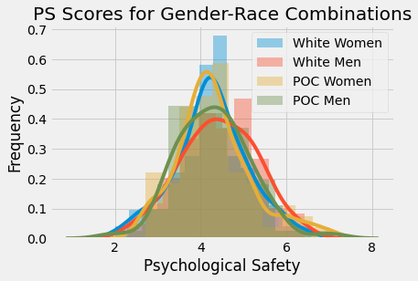
sns.distplot(df[df['white_male_female'] == 'white_female']['OSE_agg'], label='White Women')
sns.distplot(df[df['white_male_female'] == 'white_male']['OSE_agg'], label='White Men')
sns.distplot(df[df['white_male_female'] == 'poc_female']['OSE_agg'], label='POC Women')
sns.distplot(df[df['white_male_female'] == 'poc_male']['OSE_agg'], label='POC Men')
# Plot settings
plt.legend(loc='upper left')
plt.xlabel('Occupational Self-Efficacy')
plt.ylabel('Frequency')
plt.xlim(1, 7)
plt.title('OSE Scores for Gender-Race Combinations')
Text(0.5, 1.0, 'OSE Scores for Gender-Race Combinations')
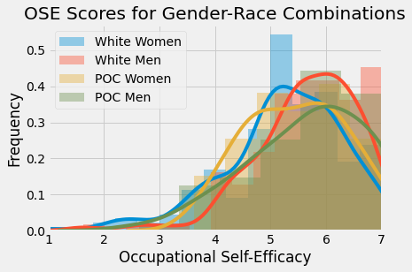